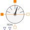
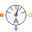
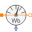

FundamentalWavePermabilitySensorSensor of fundamental wave permeability |

|
Diagram
{kind=link}
Information
This information is part of the Modelica Standard Library maintained by the Modelica Association.
This sensor is used to determined the effective fundamental wave permeability of a saturated lumped circuit reluctance. For this purpose the sensor is placed such way that the magnetic flux and the magnetic potential difference of the investigated reluctance are sensed. The area of cross section and the effective length of the investigated magnetic path have to be provided as parameters.
See example NonLinearInductor.
Parameters (3)
Connectors (6)
| fluxP |
Type: PositiveMagneticPort Description: Positive port of flux path |
|
|---|---|---|
| fluxN |
Type: NegativeMagneticPort Description: Negative port of flux path |
|
| potentialP |
Type: PositiveMagneticPort Description: Positive port of magnetic potential difference path |
|
| potentialN |
Type: NegativeMagneticPort Description: Negative port of magnetic potential difference path |
|
| mu |
Type: RealOutput Description: Absolute permeability |
|
| mur |
Type: RealOutput Description: Relative permeability |
Components (5)
|  | magneticPotentialDifferenceSensor | |
|---|---|---|
|  | magneticFluxSensor |
Type: MagneticFluxSensor |
| harmonicPotential |
Type: Harmonic Description: Fundamental wave of magnetic potential difference |
|
| harmonicFlux |
Type: Harmonic Description: Fundamental wave of magnetic flux |
|
| permeability |
Type: Permeability Description: Determines relative and absolute permeability |
Used in Examples (1)
|
Modelica.Magnetic.QuasiStatic.FluxTubes.Examples Non linear inductor with ferromagnetic core |